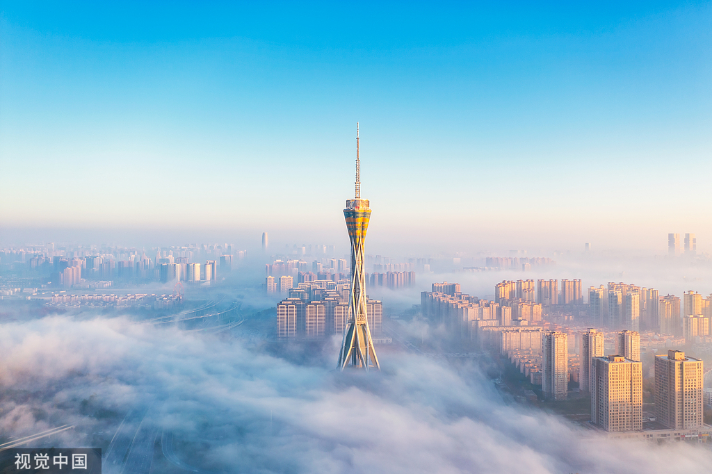

中原福塔
世界最高的全钢结构电视发射塔，总高388米，是河南的地标性建筑。登塔远眺，郑州城市面貌尽收眼底， 夜幕降临时，流光溢彩的福塔如同一支擎天之笔，书写着这座城市的壮美篇章。
一座火车拉来的古都，一个3600年生生不息的传奇。
在这里，听见历史的回响，看见未来的光亮。
郑州，一座因铁路而兴的城市，如今已发展成为国家中心城市、国际综合交通枢纽。从3600年前商王朝的都城，到如今的中原经济区核心， 郑州始终以开放包容的姿态迎接着每一个时代的机遇。这里有黄河文明的厚重底蕴，有高铁枢纽的现代速度，有少林功夫的武术传奇， 更有胡辣汤、烩面飘香的市井烟火。1200万人在这片土地上追逐梦想，书写着属于这座城市的传奇故事。
世界最高的全钢结构电视发射塔，总高388米，是河南的地标性建筑。登塔远眺，郑州城市面貌尽收眼底， 夜幕降临时，流光溢彩的福塔如同一支擎天之笔，书写着这座城市的壮美篇章。
郑州新地标，外形酷似"蝴蝶兰"的体育场承办过多项国际赛事。现代建筑美学的典范， 承载着城市的活力与激情，见证着郑州人民对体育运动的热爱与追求。
在顺城街、二七区的早市，胡辣汤的香气唤醒整座城市。一碗热腾腾的汤，一份油条水煎包， 这是郑州人一天的开始，也是这座城市最真实的温度和烟火气息。
被誉为"中国曼哈顿"的郑东新区，以如意湖为中心，摩天大楼林立，勾勒出现代都市的天际线。 夜幕降临，华灯初上，这里成为中原大地上最璀璨的明珠。从一片农田到国际化都市区，仅用了20年， 这就是郑州速度的最佳注脚。会展中心、千玺广场、大玉米楼，每一座建筑都在讲述着这座城市的雄心与梦想。

3600年的时光切片，每一寸夯土都诉说着王朝的兴衰。
公元前1600年，商王朝在此建都，郑州成为华夏文明的重要发源地之一。商城遗址的夯土城墙，历经三千多年风雨依然屹立， 诉说着青铜时代的辉煌。从商都亳邑到战国韩国新郑，从隋唐管州到宋金郑州，这片土地见证了无数王朝的兴衰更迭。 河南博物院珍藏的国宝级文物，嵩山脚下的少林禅寺，都在向世人讲述着这座城市深厚的历史底蕴。
创建于公元495年，天下第一名刹，中国功夫的发源地。"禅武合一"的理念影响了世界， 晨钟暮鼓间，千年的禅武精神代代传承，吸引着全球武术爱好者前来朝圣。
清晨的第一缕阳光洒在练武场，僧人们开始了日复一日的修行。一招一式，刚柔并济， 这是1500多年来从未间断的传统。少林功夫，不仅是武术，更是一种精神修炼。
康熙御笔亲题"少林寺"匾额，这块牌匾见证了少林寺的历史地位。作为世界文化遗产， 少林寺不仅是中国的文化瑰宝，更是人类共同的精神财富。
商代青铜器的巅峰之作，威严的猫头鹰造型象征着战神的力量。它属于中国历史上第一位有据可查的女将军妇好， 见证了那个青铜时代的辉煌与传奇。
为纪念1923年京汉铁路工人大罢工而建，双塔并联，红星闪耀。它是老郑州人的精神图腾， 整点响起的钟声是这座城市最亲切的语言，见证着一代代郑州人的成长。
距今3600年的商代都城遗址，城墙周长近7公里。那些层层夯筑的黄土，凝固了先民们的智慧与汗水， 是郑州作为"商都"最有力的历史见证。
米字形高铁中心，内陆开放高地。速度与激情在这里交汇。
1904年，京汉铁路开通，郑州从一个小县城一跃成为重要交通枢纽，被誉为"火车拉来的城市"。如今，郑州已成为中国唯一的 "米字形"高铁枢纽，拥有亚洲最大的列车编组站和全国最繁忙的高铁站之一。郑州东站日均发送旅客超过15万人次，连接着全国各大城市。 从空中的"空中丝绸之路"郑州航空港，到陆地上的中欧班列（郑州），再到如意湖畔的现代化CBD，郑州正以前所未有的速度融入全球化浪潮。
以郑州为圆心，米字形高铁网络连接八方。两小时高铁圈覆盖了中国4亿人口， 四小时可达全国大部分省会城市。这里是当之无愧的中国铁路心脏，见证着中国速度的奇迹。
如意湖如同一颗璀璨明珠镶嵌在郑东新区核心。环湖而建的摩天大楼倒映在湖面，勾勒出现代都市的迷人天际线。 这里是郑州金融、商务、文化的汇聚之地，夜晚的灯光秀吸引着无数市民游客驻足。
当夜幕降临，388米高的中原福塔华灯绽放，成为郑州最璀璨的地标。塔身的LED灯光随着音乐变幻色彩， 在城市夜空中如同一支魔幻的画笔，描绘着这座城市的现代化梦想。
一碗汤，一团面，五味调和，质味适中。
郑州的美食文化兼容并蓄，既有豫菜的传统精髓，又融合了南北风味。清晨的胡辣汤、中午的羊肉烩面、晚上的健康路夜市， 构成了郑州人一天的美食图谱。"五味调和、质味适中"是豫菜的特点，而郑州人对美食的热爱更体现在街头巷尾的烟火气中。 从顺城街的早餐铺子到二七广场的老字号，从健康路夜市到农科路酒吧街，每一处都藏着这座城市最地道的味道和最温暖的人情味。
郑州人的清晨唤醒剂。汤汁浓郁粘稠,胡椒味重,加入牛肉丁、面筋、木耳、海带丝等数十种食材, 搭配油条或水煎包,一口下去大汗淋漓,通体舒畅。这一碗热腾腾的胡辣汤,承载着郑州人对家乡的深深眷恋。

郑州传统早餐，豆沫是用小米面熬制的咸粥，配上花生米、粉条、海带丝。 金黄酥脆的油条泡进热腾腾的豆沫里，是老郑州人记忆中的味道。

健康路夜市是郑州最著名的夜市之一，红柳烤肉、烤鱿鱼、烤面筋， 烟火缭绕中是这座城市最不加修饰的热情和最地道的江湖气。
郑州街头经典小吃，用豌豆或绿豆制成的凉粉切块，大火快炒，加入豆芽、韭菜、辣椒， 焦香软嫩，是夏日消暑的绝佳选择。
北临黄河，西依嵩山。天地之中，大美不言。
郑州北临黄河，西依嵩山，坐拥得天独厚的自然资源。黄河从这里穿城而过，孕育了灿烂的中原文明；嵩山作为五岳之中岳， 承载着"天地之中"的历史文化内涵。黄河风景名胜区内，炎黄二帝巨型塑像巍然屹立，象征着中华民族的根与魂。 嵩山脚下，少林寺、嵩阳书院、中岳庙等名胜古迹星罗棋布。从黄河滩涂的湿地公园到嵩山之巅的日出云海， 郑州的自然风光既有北方的粗犷豪迈，又不失中原的温润秀美。
站在邙山之上，俯瞰黄河浩荡东流。炎黄二帝106米高的巨型塑像屹立在黄河岸边，是世界上最高的雕塑之一， 凝视着这片他们曾经耕耘过的土地。每年清明时节，海内外华人来此寻根祭祖，感受黄河文明的源远流长。
五岳之中，天地之中。峻极峰海拔1491米，是嵩山的最高峰；三皇寨的丹霞地貌奇秀险峻；太室山与少室山对峙相望。 作为世界地质公园和世界文化遗产，嵩山不仅是自然奇观，更是中华文明的精神高地。
黄河郑州段湿地是候鸟迁徙的重要驿站，每年都有成千上万只候鸟在此栖息。芦苇荡漾，水鸟翱翔， 展现着黄河生态保护的成果和人与自然和谐共生的美好画面。

凌晨登顶峻极峰，等待日出的那一刻。当第一缕阳光洒向中原大地，云海翻涌，金光万道， 仿佛能听见历史的回响，感受到"天地之中"的磅礴气势。

郑州北部的天然氧吧，森林覆盖率达90%以上。春天山花烂漫，夏日绿树成荫，秋来层林尽染，冬至银装素裹， 是市民休闲健身的理想场所。